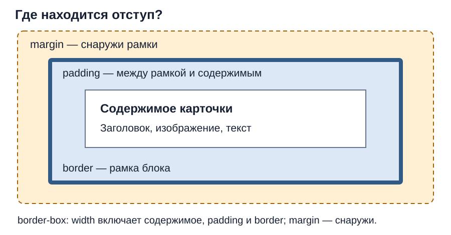

CSS: селекторы, каскад, размеры, отступы и блочная модель
Индивидуальные задания
- Вариант 01
- Вариант 02
- Вариант 03
- Вариант 04
- Вариант 05
- Вариант 06
- Вариант 07
- Вариант 08
- Вариант 09
- Вариант 10
- Вариант 11
- Вариант 12
- Вариант 13
- Вариант 14
- Вариант 15
- Вариант 16
- Вариант 17
- Вариант 18
- Вариант 19
- Вариант 20
- Вариант 21
- Вариант 22
- Вариант 23
- Вариант 24
- Вариант 25
- Вариант 26
- Вариант 27
- Вариант 28
- Вариант 29
- Вариант 30
- Вариант 31
- Вариант 32
- Вариант 33
- Вариант 34
- Вариант 35
- Вариант 36
- Вариант 37
- Вариант 38
- Вариант 39
Продолжаем свою папку VariantNN-web. Сегодня нужно оформить основную часть трёх страниц и отделить друг от друга карточки каталога. Работайте по шагам ниже: изменили → сохранили → обновили браузер → посмотрели результат.
Свой вариант задаёт тексты, картинки и цвета. Вариант 00 хранит полное задание и данные примера преподавателя; студентам он не назначается.
| Шаг | Где работать | Что получится |
|---|---|---|
| 1 | Три HTML-файла | Все используют один CSS |
| 2 | HTML | У основной части и карточек есть классы |
| 3 | CSS | Общий шрифт и удобная ширина страницы |
| 4 | CSS | У трёх карточек видны рамки и отступы |
1. Откройте прежний проект
В папке должны быть index.html, catalog.html, form.html, style.css и изображения. Пройдите по меню все три страницы. В меню каждой — две ссылки на другие страницы; ссылки на открытую страницу нет.
Внутри head каждого HTML-файла проверьте подключение:
<link rel="stylesheet" href="style.css">
Если чего-то не хватает, восстановите по паре 13 или паре 14. Новую папку проекта создавать не нужно.
2. Добавьте классы в HTML
Класс — имя группы элементов, которое CSS использует для выбора. У существующего main во всех трёх файлах добавьте page:
<main class="page">
В catalog.html найдите три существующих article. У каждого добавьте card. Начало первой позиции примера:
<article class="card">
<h2>Холодильник</h2>
Всё содержимое и закрывающие теги оставьте на месте. Если у элемента уже есть класс, допишите новый через пробел в том же атрибуте.
| HTML | CSS-селектор | Что выбирает |
|---|---|---|
class="card" |
.card |
Все три карточки |
class="page" у main |
main.page |
Основную часть страницы |
Тег h2 |
h2 |
Заголовки второго уровня |
В HTML класс пишется без точки; в CSS перед именем класса нужна точка.
Посмотрите результат: товары и тексты остались на месте. Пока правил для классов нет, внешний вид может не измениться.
3. Оформите основную часть
Откройте style.css. Если нужное правило уже есть, изменяйте его, не добавляйте вторую копию. Прежние цвета и меню сохраните.
* {
box-sizing: border-box;
}
border-box означает: рамка и внутренние отступы входят в заданную ширину блока.
В существующем body оставьте свои цвета и добавьте:
font-family: Arial, sans-serif;
font-size: 1rem;
line-height: 1.5;
margin: 0;
Это свойства внутри body { ... }. Затем добавьте правило основной части:
main.page {
width: 92%;
max-width: 56rem;
margin: 0 auto;
padding: 1rem;
}
| Запись | Для чего нужна |
|---|---|
width: 92% |
Оставляет место по бокам |
max-width: 56rem |
Не даёт содержимому слишком растянуться |
margin: 0 auto |
Ставит блок посередине по горизонтали |
padding: 1rem |
Отодвигает содержимое от края блока |
% здесь считается от ширины родителя. rem зависит от размера шрифта корневого элемента; обычно 1rem соответствует 16px, но настройки браузера могут отличаться. Вычислять размеры на этой практике не нужно.
Посмотрите результат: основной текст на всех трёх страницах читается одинаково; в широком окне содержимое находится посередине.
4. Оформите карточки
Добавьте или дополните правило:
.card {
border: 1px solid #94A3B8;
padding: 1rem;
margin-bottom: 1rem;
}
В правиле .card — селектор, padding — свойство, 1rem — значение. Объявление заканчивается точкой с запятой.

| Часть блока | Что видно в каталоге |
|---|---|
| Содержимое | Название, картинка и текст товара |
padding |
Пространство между содержимым и рамкой |
border |
Рамка вокруг одного товара |
margin-bottom |
Пространство после карточки |
Посмотрите результат: три отдельные карточки стоят сверху вниз. У каждой есть рамка, текст не прижат к ней, соседние карточки не сливаются. Точную толщину и отступы на глаз измерять не нужно.
Если стиль не применился
| Что произошло | Что проверить сначала |
|---|---|
| Не изменилось ничего | Сохранили ли CSS; подключён ли он в этой странице |
| Изменилась только одна карточка | Есть ли class="card" у всех трёх article |
| Одна рамка вокруг всех товаров | Не добавлен ли класс общему контейнеру вместо отдельных article |
| Последние правила не работают | Закрыты ли { }, есть ли ; |
| Значение меняете, а вид прежний | Нет ли другого правила, которое перекрывает это свойство |
При одинаковых селекторах более поздняя запись свойства перекрывает раннюю. Поэтому правьте найденное правило, вместо того чтобы дописывать его копии. Цвет текста обычно наследуется от родителя, но правило самого элемента может его изменить. Эти наблюдения помогают найти ошибку; отдельный отчёт и серия опытов не нужны.
Сохраните папку проекта и переходите к оформлению карточек и формы. Результат двух практик покажете вместе. Если закончили раньше, проверьте три страницы и сохранённое задание для третьей пары.